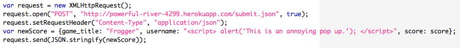
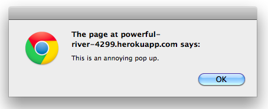
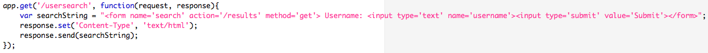
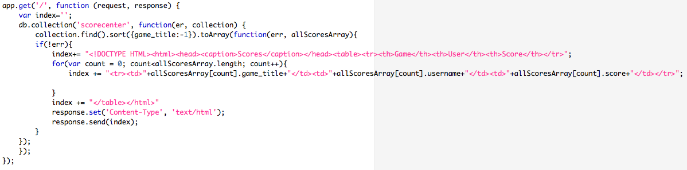

Introduction
There are thousands of video games currently available to be played on the internet and in most of the those games the user receives a score when the game ends. The problem? There is no place to view the high scores or search for a user to see their high scores. That is why my client Kelly O'Grady created ScoreCenter. Her ScoreCenter app receives high scores from any html5 game and puts them in a mongo database. Some of the features of her app include the ability to search for user and display only their high scores, and the ability to query only high scores for a certain game. I have been hired because her app contains many security flaws that put her at risk of being maliciously hacked. In this document I will document some of the security flaws of ScoreCenter and describe how they can be fixed.
Methodology
ScoreCenter is not a very large application and the source code was relatively easy to navigate. I strictly used Kelly's source code for finding security flaws in her app. After completing the same exact project I knew where to look in her source code to find the most obvious security flaws.
Abstract of Findings
There was a major theme that I found while researching the security flaws in ScoreCenter, input validation. If there is one thing that I have learned from taking Comp20, it is that you can never trust your users. Anytime that you allow users to enter some kind of text input, that is passed into your code you must make sure that they are not including any kind of malicious scripts. The way that you generally minimize these types of threats is to validate the user input before having it passed into important parts of your code. It is important to express what kind of input you want rather than what kind of input you do not want because crafty hackers can often get around the latter.
Issues Found
-
Issue 1
Issue
Database Injection


Location
/submit.json Page
Severity of Issue
HIGH - with malicious intent, hackers can inject scripts into your database.
Description of Issue
Any html5 is allowed to send its high scores to the ScoreCenter app which is a huge feature of the app. One problem with this is that Kelly cannot control what is being sent to her database. Right now, malicious hackers could inject scripts into the username or score parameter of the score that they are sending to the database. These scripts could possibly mess with the database itself, for instance deleting or editing data. These scripts could also be used to create annoying popups when the high scores are loaded in the index page.
Resolution
To resolve this issue Kelly must create an input validator in her /submit.json page. The purpose of this validator would be to check to make sure that the user has actually entered a valid username and submitted a valid score before calling the collection.insert() function which adds the data to the database. To make sure that user is not using any angle brackets to write scripts we can use the if statement: if(username =~ /^[\w.-]+$/ && score =~ /^[\w.-]+$/), which makes it so that usernames can only contain letters, number and the underscore '_'.
Issue 2
Issue
User Input Validation

Location
/usersearch Page
Severity of Issue
HIGH - Similar to issue 1, with malicious intent hackers can use the input box to perform XSS easily.
Description of Issue
XSS also known as cross site scripting allows users to inject client-side script into web applications. These scripts can then affect what other none-malicious users see when they visit the web application. In this case, ScoreCenter takes user input that is supposed to be in the form a username. The application then searches the database for usernames that match whatever the user searched for. The issue with this is that there is nothing stopping a user from typing in some malicious script into the search form.
Resolution
Similar to the first issue, a simple if statement can resolve this issue. When the app reads whatever the user searched for, it must call this statement: if(searchedFor =~ /^[\w.-]+$/), so that our program doesn't allow any kind of script to be injected into it.
Issue 3
Issue
Output Validation

Location
/ Index Page
Severity of Issue
MEDIUM - but can be reduced to LOW after issue 1 is accounted for.
Description of Issue
If someone has somehow bypassed the resolution proposed for issue 1, the database for the app would be tainted. This doesn't mean that the app should allow the malicious script to be run after it is called from the database. This would occur in the index page when the entire contents of the database are shown. There should be some kind of validation for displaying the data from the database. This way even if there is a malicious script in the database, our app will view it, but not return it to be displayed.
Resolution
Similar to issues 1 and 2, this issue can be resolved with one simple if statement to make sure that the returned data from the database is not a malicious script. Before calling index += allScoresArray[count].game_title + ... we must call the statement: if(username =~ /^[\w.-]+$/ && game_title =~ /^[\w.-]+$/ && score =~ /^[\w.-]+$/), to make sure all 3 parameters of the score data are not tainted.
Conclusion
For any web application, security should be the number one concern. Whether it involves protecting sensitive stored user information or general usability of the app, malicious hackers will try anything to break your security. ScoreCenter, like many web applications was riddled with security flaws, for the most part relating to user input. Any wannabe hacker would be able to enable malicious scripts on ScoreCenter because of the lack of security. Because of this, I would suggest Kelly either fixes the issues stated above, or hire someone from our Comp20 class to fix them for her. The resolutions are very simple and would probably take no more than an hour to implement therefore costing no more than $50. In the future I would suggest Kelly consult with me or any other student in Comp20 before launching a new application so we can identify any security flaws before it is too late.